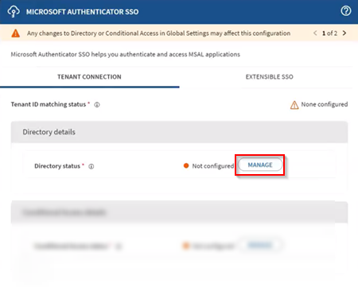
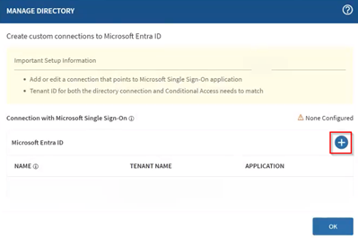
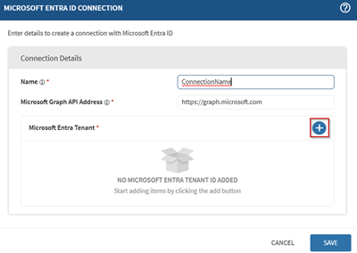
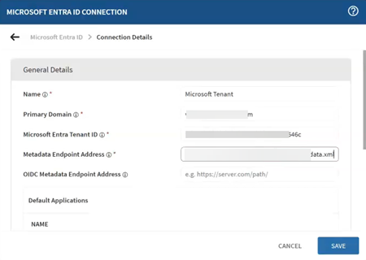
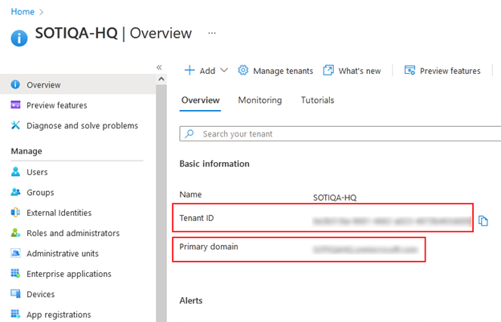
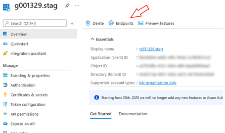
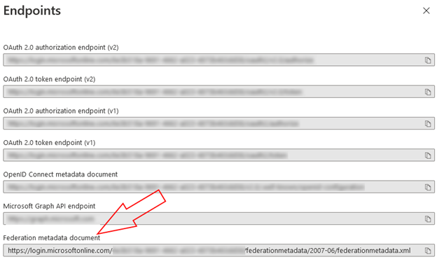
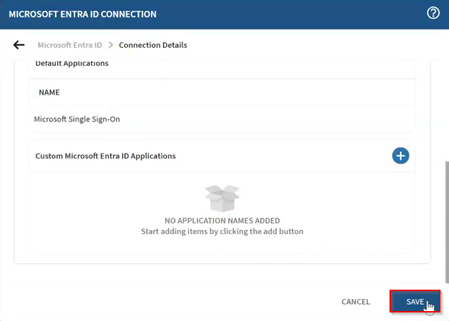

Connect Microsoft Entra ID for Microsoft Authenticator SSO (iOS/ iPadOS)
Set up a trusted connection between SOTI MobiControl and Microsoft
Entra ID to support device registration and Single Sign-On (SSO) for Microsoft
apps.
This is the third step in the Microsoft Authenticator SSO
configuration. See Configuring Microsoft Authenticator Single Sign-On (iOS/ iPadOS). In
this step, you connect your Microsoft Entra ID tenant to SOTI MobiControl by defining directory and tenant settings. This allows
devices to register to Entra ID and enables authentication through the Microsoft SSO
app.
In the Directory Details section of your Microsoft
Authenticator SSO payload, select Manage to open the
Manage Directory window.

Select (Add) to create a new Microsoft
Entra ID connection.

In the Microsoft Entra ID Connection dialog box, enter the
following:
A name for the connection.
Microsoft Graph API Address:
https://graph.microsoft.com (default).

Select (Add) to define the tenant
details:
Primary Domain: The domain assigned to your Entra ID tenant.
Microsoft Entra Tenant ID: The tenant ID of your enterprise Microsoft
Entra instance.
Metadata Endpoint Address: The URL provided by Microsoft Entra ID that
exposes your tenant’s federation and configuration details in XML
format.

Tip: To find your Microsoft Entra ID tenant
details:
Go to Entra ID → Overview and copy the
Primary domain and Tenant
ID values from the Basic
Information section.

To find the Metadata endpoint address, go to App
registrations → Endpoints in your Microsoft Entra ID
tenant and copy the Federation Metadata document URL
value.


Select Save to save the Entra ID connection.

Assign the default Microsoft SSO application that was added automatically by
selecting it in the Application Name list.